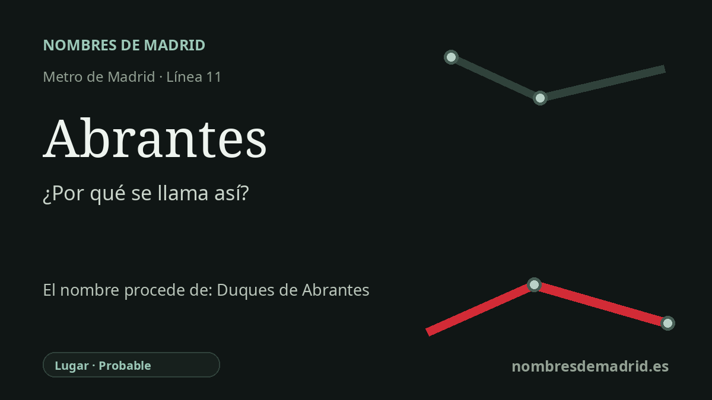

Publicado el · Investigación de Nombres de Madrid · Cómo verificamos cada origen · 8 fuentes consultadas
Respuesta rápida
La estación de Abrantes toma su nombre de la avenida de Abrantes y del barrio de Carabanchel al que sirve. Lo más probable es que el nombre pertenezca al conjunto local de topónimos portugueses en torno a la avenida de Oporto, más que a una dedicatoria directamente documentada a los duques de Abrantes.
La historia del nombre
La estación de Abrantes se llama así por el lugar donde se encuentra: la avenida de Abrantes, en el distrito de Carabanchel. La Comunidad de Madrid describe las primeras obras de la línea 11 como un trazado paralelo a la avenida de Abrantes, y la estación abrió con el tramo Plaza Elíptica-Pan Bendito el 16 de noviembre de 1998.
El nombre ya formaba parte de la geografía local antes de la llegada del Metro. La cartografía oficial del Ayuntamiento identifica Abrantes como el barrio 117 de Carabanchel, y la avenida es uno de sus ejes de referencia. En el uso cotidiano, por tanto, el nombre de la estación es a la vez nombre de calle y nombre de barrio.
El origen más profundo debe entenderse mejor como topónimo. Abrantes es una ciudad y municipio portugués situado junto al Tajo, y las calles próximas forman un pequeño paisaje de nombres portugueses: Oporto, Portalegre, Elvas, Cintra, Viseo y Estoril aparecen en la misma zona. Ese patrón hace más verosímil una referencia geográfica portuguesa que una dedicatoria directa a una persona concreta.
También existe una conexión nobiliaria madrileña con el nombre Abrantes. El Palacio de Abrantes, en la calle Mayor, tomó su nombre de los duques de Abrantes, que adquirieron el inmueble en 1842 y lo transformaron en el siglo XIX; más tarde pasó a ser sede del Instituto Italiano de Cultura. Este dato aporta contexto, pero no equivale a demostrar que la avenida de Carabanchel recibiera su nombre por los duques.
Para una explicación pública, la fórmula más prudente es decir que la estación toma su nombre de la avenida y del barrio de Abrantes, vinculados en último término al topónimo portugués Abrantes. La clasificación antigua como nombre de persona resulta demasiado tajante salvo que aparezca un expediente municipal de denominación que indique expresamente que la avenida homenajeaba a los duques de Abrantes.